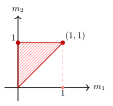

Example 12.2.7. Let us continue the example of $\mathrm{Bl}_{0}\mathbb {P}^2$ in example 12.1.4. This time, let us take $\sigma _1'$ as our reference cone and $\rho _1=\sigma _5$, $\rho _2=\sigma _7$. Then $Y_1$ is just the strict transform of the line $\{ [X_0:0:X_2]:X_0X_2\neq 0\} $ in $\mathbb {P}^2$, while $Y_2$ is the point $Y_1\cap E$, where $E$ is the exceptional divisor.
In this case, the map $\Phi $ is given by
\[ \Phi (m_1,m_2)=(m_1,m_1+m_2). \]
We find that
\[ \Delta _{Y_{\bullet }}\left(\mathrm{Bl}_{0}\mathbb {P}^2,\pi ^*\mathcal{O}_{\mathbb {P}^2}(1)\right) \]
is the polytope in 12.6.
